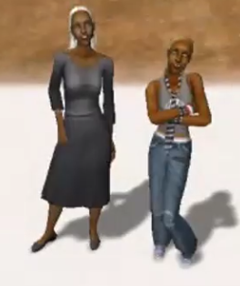
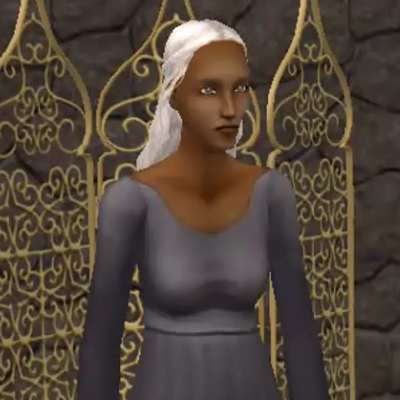
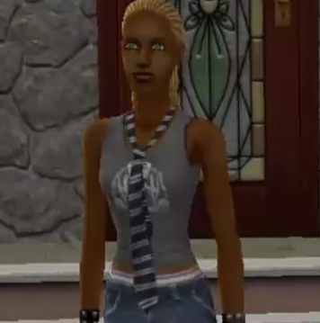
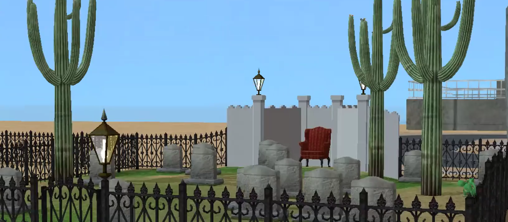

| Welcome to Strangetown | |||
|---|---|---|---|
| Case Files: | The Specter Family | ||
| Specter | The Specter family storyline is shrouded in secrets and dark mysteries, inviting players to uncover the truth behind Olive's past and the fate of her deceased family members. The family's eerie reputation and haunted mansion create a compelling narrative backdrop, where players can explore themes of mortality, betrayal, and the supernatural. | ||
| Curious | |||
| Smith | |||
| Beaker | |||
| Strangetown | |||
|  | |||
OliveOlive Specter is the matriarch of the Specter family, known for her eerie appearance and mysterious background. She lives alone in a large mansion filled with gravestones and haunted artifacts. Olive is rumored to have a dark past involving multiple deceased spouses, leading to speculation about her involvement in their deaths. Her eerie presence and solitary lifestyle contribute to the neighborhood's atmosphere of mystery and intrigue. |
 | ||
OpheliaOphelia is the daughter of Creon Nigmos and Willow Nigmos, making her part of the Nigmos family who live near the Specter mansion. Her storyline intertwines with the eerie and mysterious reputation of the Specter family, particularly Olive Specter, her stepmother. Ophelia's family dynamics are complex, with her mother Willow often portrayed as neglectful or struggling with personal issues, leaving Ophelia to navigate her adolescence largely on her own. |
 | ||
|
The Specter household is unique in that it includes several deceased Sims who appear as ghosts, known as the Grimes and Grunt ghosts. These ghosts are remnants of Olive's deceased spouses and descendants, haunting the mansion and adding to its haunted ambiance. |
 | Back to top | © Emily Hubers 2024 | Powered by ChatGPT |